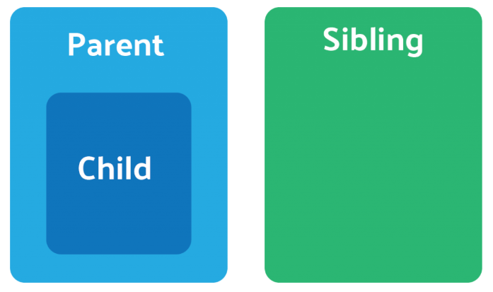
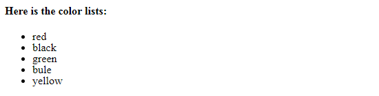
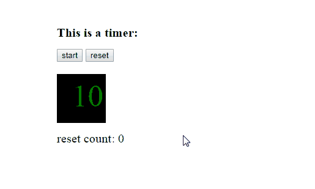
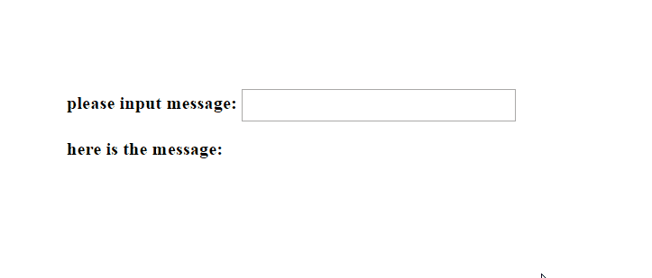

3 学习Angular模块、组件和组件模板知识¶
本章开始，将依照官方网站的示例（英雄指南练习 ），逐步带领读者学习和掌握Angular知识。
3.1 使用 Angular CLI 创建应用¶
关于Angular CLI的知识，主要有下面内容：
3.1.1 初识Angular CLI¶
安装Angular CLI
运行Angular CLI
卸载及更新Angular CLI
3.1.2 准备Angular的开发环境¶
如何扩展IDE的功能
在运行时编辑工程
编译时的错误提醒
运行时的错误提醒
3.1.3 Angular CLI常用命令及选项¶
ng n angular-tour-of-heroes --defaults
初始化命令及选项介绍: https://angular.io/cli/new
创建命令及选项介绍: https://angular.io/cli/generate
3.1.4 Angular项目结构概述¶
3.1.5 如何启动Angular应用程序¶
3.1.6 Angular的启动过程有哪些步骤¶
3.2 组件的基础概念¶
组件包含了一组特定的功能，每个组件的功能都单一且独立，可以进行重复使用；组件可以通过 angular cli 进行创建，生成的组件位于项目的 src/app/ 路径下面：
ng g component heroes ## 创建一个heroes（英雄列表）组件
当需要将组件放置在某个指定的目录下时，可以直接在 ng g 命令中添加路径：
ng g component components/hero ## 将 hero 组件生成到 components 路径下
angular 应用就是通过一个个的组件所构成的组件树，一个组件包含了如下的四个部分：
heroes.component.ts：组件类，用来处理数据和功能，为视图呈现提供支持
heroes.component.html：组件对应的页面 HTML 模板，用来呈现组件的功能
heroes.component.scss：只针对当前组件的样式
heroes.component.spec.ts：当前组件的单元测试文件（非必须）
当通过命令行创建一个新的组件之后，会自动将新创建的组件注册到应用的根模块（app.module.ts）中。
在组件类中，通过使用 @Component 装饰器用来将类声明为组件类，并为这个组件类配置一些元数据，以决定该组件在运行期间该如何处理、实例化和使用。
@Component装饰器中存在三个基础的配置参数，用来完成组件与视图之间的关联：
selector：选择器，当我们在页面上添加了这个选择器指定的标签（<app-heroes></app-heroes>）后，就会在当前使用位置上创建并插入这个组件的一个实例
templateUrl：该组件所对应的 HTML 模板文件地址
styleUrls：该组件视图所特有的 css 样式文件地址
如上所述：当需要使用这个组件时，直接在页面上添加选择器对应的标签就可以了。
3.3 模板绑定语法¶
在 angular 应用中，组件扮演着控制器或是视图模型的作用，在创建组件时会关联一个 html 文件，这个 html 文件则是一个基础的 angular 模板文件
在这个模板文件中，可以通过 angular 内置的模板语法与 html 元素进行结合，从而告诉 angular 如何根据我们的应用逻辑和数据来渲染页面
3.3.1 插值表达式¶
插值表达式可以将组件中的属性值或者是模板上的数据通过模板表达式运算符进行计算，最终将值渲染到视图页面上， 使用双花括号插值显示应用标题：
<h1>{{title}}</h1>
模板表达式的变量来源：
模板本身的变量
指令的上下文变量
组件的成员信息（属性 or 方法）
在使用模板表达式时，如果变量名在多个来源中都存在的话，则模板变量是最优先的，其次是指令的上下文变量，最后是组件的成员
在使用模板表达式时应该遵循如下的原则：
简单：正常情况下，应该将业务逻辑或是数据运算放到组件中，模板表达式只作为属性或方法的调用
快速执行：模板表达式得出的数据应该快速结束，否则就会对于用户体验造成影响
没有可见的副作用：模板表达式只作为数据的展示，不应该改变任何的数据；应该构建出幂等的表达式，除非依赖的值发生变化，否则多次调用时，应该返回相同的数据信息
3.3.2 模板绑定语法¶
通过数据绑定机制，将数据源与视图进行绑定，从而实现源数据与用户呈现的一致性
从数据源到视图：插值、组件中的属性、dom 元素的 property、css 样式、css 类:
1、插值表达式：{{expression}} 2、使用 [] 进行绑定：<a [href]='expression'></a> 3、使用 bind 进行绑定：<a bind-href='expression'></a>从视图到数据源：事件:
1、使用 () 进行绑定：<a (click)='statement'></a> 2、使用 on 进行绑定：<a on-click='statement'></a>
视图与数据源之间的双向绑定：数据对象:
1、使用 [()] 进行绑定：<input type="text" [(ngModel)]="product.Name"> 2、使用 bindon 进行绑定：<input type="text" bindon-ngModel="product.Name">
3.3.3 模板引用变量¶
通过使用 $event 作为方法的参数会将许多用不到的模板信息传递到组件中，导致我们在仅仅是为了获取数据的前提下，却需要对于页面元素十分了解，违背了模板（用户所能看到的）与组件（应用如何去处理用户数据）之间的关注点分类的原则。因此，这里应该使用模板引用变量的方式获取数据信息。
模板引用变量是对模板中 DOM 元素的引用，提供了从模块中直接访问元素的能力。
<input type="text" #refMsgInput (keyup)="getRefMsg(refMsgInput.value)">
<p>通过模板引入变量的方式获取到输入的值：{{refMsg}}</p>
export class AppComponent {
public refMsg: string;
getRefMes(msg: string) {
this.refMsg = msg;
}
}
3.4 指令¶
3.4.1 属性型指令¶
属性型指令被应用在视图 dom 元素上，用来改变 dom 元素的外观或行为
NgClass：用来设置元素的多个 css 类属性，如果只设置一个 css 类，应该使用模板绑定语法中 class 类绑定
<p [ngClass]="inlineStyle">NgClass 属性指令</p>
inlineStyle = {
'text-red': true,
'bg-blue': false,
};
这里的 text-red、bg-blue 都是 css 类名，如果想要在指定的元素上添加该类，则 css 类名对应的值为 true，反之则为 false。
NgStyle：用来设置元素的多个内联样式，如果只设置一个内联样式，应该使用模板绑定语法中的样式绑定
<p [ngStyle]="currentStyles">NgStyle 属性指令</p>
currentStyles = {
'font-style': 'italic',
'font-weight': 'bold',
'font-size': '24px'
};
通过在组件的属性中设置多个内联样式对象的形式，完成对于页面元素样式的批量设置。
NgModel：双向数据绑定
<input [(ngModel)]="hero.name"/>
3.4.2 结构型指令¶
结构型指令用来操作 dom 树，通过进行一些的逻辑判断，从而完成对于页面布局的修改
NgIf：根据表达式的值（true or false）来创建或者销毁 dom 元素
<p *ngIf="expr">NgIf 结构型指令</p>
当 expr 属性为 true 时，这个元素则会显示在页面上，当属性值为 false 时，则不显示该元素
ngIf 指令并不是通过使用 css 样式来隐藏元素的，当值为 false 时，则这些元素会从 dom 中被销毁，并且所有监听该 dom 元素的事件会被取消，当重新显示该元素时，会重新执行初始化的过程
与销毁元素不同，对于隐藏的元素来说，所有的元素监听事件还会执行监听的，再次显示时不用重新进行初始化过程
NgFor：通过定义单条数据的显示格式，angular 以此为模板，循环渲染出所有的数据
<p *ngFor="let item of products; let i = index">{{i+1}} - {{item.name}} --- {{item.price}}</p>
products = [{
'name': 'lalala',
'price': '$200'
}, {
'name': 'hehehe',
'price': '$400'
}, {
'name': 'wuwuwu',
'price': '$120'
}, {
'name': 'xixi',
'price': '$570'
}];
NgFor 指令上下文中的 index 属性在每次迭代中，会获取到条数据的索引值
当渲染的数据发生改变时，会导致 DOM 元素的重新渲染，此时可以采用 trackBy 的方式，通过在组件中添加一个方法，指定循环需要跟踪的属性值，此时当渲染的数据发生改变时，只会重新渲染变更了指定的属性值的数据;
<p>不使用 trackBy 跟踪属性</p>
<div>
<p *ngFor="let item of products; let i = index;">
{{i+1}} - {{item.name}} --- {{item.price}}
</p>
</div>
<p>使用 trackBy 跟踪属性</p>
<div>
<p *ngFor="let item of products; let i = index; trackBy: trackByIndex">
{{i+1}} - {{item.name}} --- {{item.price}}
</p>
</div>
<button (click)="addProduct()">新增</button>
import { Component, OnInit } from '@angular/core';
@Component({
selector: 'app-product-list',
templateUrl: './product-list.component.html',
styleUrls: ['./product-list.component.scss']
})
export class ProductListComponent implements OnInit {
public products = [{
'name': 'lalala',
'price': '$200'
}, {
'name': 'hehehe',
'price': '$400'
}, {
'name': 'wuwuwu',
'price': '$120'
}, {
'name': 'xixi',
'price': '$570'
}];
constructor() { }
ngOnInit(): void {
}
trackByIndex(index: number, item: any): string {
return item.price;
}
addProduct() {
this.products = [{
'name': 'lalala',
'price': '$200'
}, {
'name': 'hehehe',
'price': '$400'
}, {
'name': 'wuwuwu',
'price': '$120'
}, {
'name': 'xixi',
'price': '$570'
}, {
'name': 'lululu',
'price': '$' + (Math.random() * 100).toFixed()
}];
}
}
NgSwitch：根据条件切换，从候选的几个元素中选择匹配的，放到 DOM 元素中
3.5 管道¶
在使用模板表达式绑定数据时，可以使用管道对于表达式的结果进行转换
管道是一种简单的函数，它们接受输入值并返回转换后的值。通过在模板表达式中使用管道运算符（|）则可以完成相应的结果转换
3.5.1 管道运算符¶
管道是一种特殊的函数，可以把运算符（|）左边的数据转换成期望呈现给视图的数据格式，例如，将时间进行格式化、将数据转换成 json 字符串的形式等等
可以针对一个数据使用多个管道进行串联，并且管道运算符的优先级比三元运算符（ ?: ）高， 使用管道格式化英雄的名字：
<h2>{{hero.name | uppercase}} Details</h2>
3.5.2 安全导航运算符¶
在视图中使用的属性值为 null or undefined 时，javascript 和 angular 会引发空指针异常并中断视图的渲染过程， 从而视图会渲染失败，而使用了安全导航运算符（?）后，视图依然会渲染，只是显示的值为空白：
<p>名称为：{{products?.name}}</p>
3.5.3 非空断言运算符¶
在 tsconfig.json 中启用 strictNullChecks 属性，typescript 将会强制开启严格的空值检查，在这种模式下，所有定义了类型的属性是不允许赋值为 null 的，当将属性赋值为 null，则会编译报错。
非空断言运算符用来告诉编译器对特定的属性不做严格的空值校验，当属性值为 null or undefined 时，不抛错误。在下面的代码中，在判断 obj 存在后，就不再针对 obj.name 进行校验
<span>{{obj!.name}}</span>
3.5.4 管道示例¶
<h3>json 管道</h3>
<p>{{products | json}}</p>
<h3>date 管道</h3>
<p>现在时间：{{date | date:'yyyy-MM-dd HH:mm:ss'}}</p>
<h3>upper 管道</h3>
<p>转换成全大写：{{url | uppercase}}</p>
<h3>lower 管道</h3>
<p>转换成全小写：{{url | lowercase}}</p>
3.6 组件之间的通信¶
在Angular组件之间共享数据，有以下四种方式：
父组件至子组件: 通过@Input共享数据
子组件至父组件: 通过@Output EventEmitter共享数据
子组件至父组件: 通过@ViewChild共享数据
不相关组件： 通过service共享数据
在介绍这几种方式之前，先来看下父子组件和不相关组件是什么，在下图中可以看出，左边是描述父子组件关系，左右两个是描述不相关组件关系。
{kind=link}
3.6.1 父组件至子组件¶
第一种方式，父组件至子组件: 通过@Input共享数据
这个例子是在子组件中直接列出出父组件中所有的颜色，具体代码如下：
1 2 3 4 5 6 7 8 9 10 11 12 13 14 15 | import { Component, OnInit } from '@angular/core';
@Component({
template:`<h4>Here is the color lists:</h4>
<app-child [colorLists]="colorLists"></app-child>`
})
export class ParentComponent implements OnInit {
private colorLists: any;
ngOnInit() {
this.colorLists = ['red', 'black', 'green', 'bule', 'yellow'];
}
}
|
1 2 3 4 5 6 7 8 9 10 11 12 13 14 15 | import { Component, OnInit, Input } from "@angular/core";
@Component({
selector: 'app-child',
template: `<ul>
<li *ngFor="let item of colorLists">{{item}}</li>
</ul>`
})
export class ChildComponent implements OnInit {
@Input() colorLists: any;
ngOnInit() {
}
}
|
效果如下：
{kind=link}
3.6.2 子组件至父组件：@Output¶
第二种方式，子组件至父组件: 通过@Output EventEmitter共享数据
这个例子是子组件提供两个按钮进行投票，而父组件中需要实时显示投票结果，具体代码如下：
1 2 3 4 5 6 7 8 9 10 11 12 13 14 15 16 17 18 19 20 | import { Component } from "@angular/core";
@Component({
template: `<div style="margin-left:100px;font-size:1.28em;">
<div> <strong>Here is the vote results:</strong></div>
<div style="margin-top:20px;"> agreed:{{agreed}} disagreed: {{disAgreed}}<div>
</div>
<app-vote-child (vote)="onVote($event)"></app-vote-child>
`
})
export class VoteParentComponent {
private agreed: number = 0;
private disAgreed: number = 0;
onVote(agree: boolean) {
agree ? this.agreed++ : this.disAgreed++;
}
}
|
1 2 3 4 5 6 7 8 9 10 11 12 13 14 15 16 17 | import { Component, Output, EventEmitter } from "@angular/core";
@Component({
selector: 'app-vote-child',
template: `
<div style="margin-top:30px;margin-bottom: 15px;"><strong>please take your vote:</strong> </div>
<button (click)="takeVote(true)">Agree</button> <button (click)="takeVote(false)">Disagree</button>
`
})
export class VoteChildComponent {
@Output() vote = new EventEmitter<Boolean>();
takeVote(agree: Boolean) {
this.vote.emit(agree);
}
}
|
效果如下：
{kind=link}
3.6.3 子组件至父组件：@ViewChild¶
第三种方式，子组件至父组件: 通过@ViewChild共享数据
在第二种方式中，通过@Output EventEmitter共享数据，父组件只能访问子组件的某几个属性值，但是没办法去调用子组件中的方法。但是通过@ViewChild可是实现父组件同时可以访问子组件中的属性和方法。
这个例子是一个简单的计时器，所有的计时逻辑都在子组件中，父组件负责显示时间。这个方式需要注意以下两点：
1.子组件中方法或者变量为public的时候才能被父组件访问
2.在父组件中，只有等它AfterViewInit之后timerChildComponent才存在
1 2 3 4 5 6 7 8 9 10 11 12 13 14 15 16 17 18 19 20 21 22 23 24 25 26 27 28 29 30 31 32 33 34 | import { Component, ViewChild, AfterViewInit } from "@angular/core";
import { TimerChildComponent } from './timer-child.component';
@Component({
template: `
<div style="margin-left:100px;font-size:1.28em">
<div style="margin-top:20px;margin-bottom: 15px;"> <strong>This is a timer: </strong></div>
<button (click)="start()"> start </button> <button (click)="reset()"> reset </button>
<div style="background:black;width:80px;height:80px;margin-top:20px;position:relative">
<div style="font-size:2.5em;color:green;position:absolute;margin-left: 25px;margin-top: 10px;">{{seconds()}}</div>
</div>
<app-timer-child></app-timer-child>
</div>
`
})
export class TimerParentComponent implements AfterViewInit {
@ViewChild(TimerChildComponent)
private timerChildComponent: TimerChildComponent;
seconds() {
return 0;
}
ngAfterViewInit() {
setTimeout(() => this.seconds = () => this.timerChildComponent.seconds, 0);
}
start() {
this.timerChildComponent.onStart();
}
reset() {
this.timerChildComponent.onReset();
}
}
|
1 2 3 4 5 6 7 8 9 10 11 12 13 14 15 16 17 18 19 20 21 22 23 24 25 | import { Component } from "@angular/core";
@Component({
selector: 'app-timer-child',
template: `
<div style="margin-top:15px">reset count: {{resetCount}}</div>
`
})
export class TimerChildComponent {
public seconds: number = 10;
private resetCount: number = 0;
onStart() {
window.setInterval(() => {
if (this.seconds) {
this.seconds = this.seconds - 1;
}
}, 1000)
}
onReset() {
this.seconds = 10;
this.resetCount++
}
}
|
效果如下：
{kind=link}
3.6.4 不相关组件¶
第四种方式，不相关组件： 通过service共享数据
如果两个组件直接没有直接联系，那么就可以通过service来通信，在下面的例子中，两个不相关的组件：SiblingOneComponent 和 SiblingTwoComponent，在SiblingOneComponent写消息，实时在SiblingTwoComponent显示出来。代码如下：
1 2 3 4 5 6 7 8 9 10 11 12 13 14 | import { Injectable } from "@angular/core";
import { Subject } from 'rxjs/Subject';
@Injectable()
export class DataService {
private msgContent: Subject<string> = new Subject<string>();
setMessage(value:string){
this.msgContent.next(value);
}
getMessage(){
return this.msgContent.asObservable();
}
}
|
1 2 3 4 5 6 7 8 9 10 11 12 13 14 15 16 17 18 19 | import { Component } from "@angular/core";
import { DataService } from './data.service';
@Component({
selector: 'app-sibling-one',
template: `
<div style="margin-top:20px;margin-bottom: 15px;"> <strong>please input message: </strong>
<input style="width:300px;height:30px" [(ngModel)]="message" (keyup)="onMsgChange()"/>
</div>
`
})
export class SiblingOneComponent {
private message: string;
constructor(private dataService: DataService) {
}
onMsgChange() {
this.dataService.setMessage(this.message);
}
}
|
1 2 3 4 5 6 7 8 9 10 11 12 13 14 15 16 17 18 19 20 21 22 23 | import { Component, OnInit, OnDestroy } from "@angular/core";
import { Subscription } from 'rxjs';
import { DataService } from './data.service';
@Component({
selector: 'app-sibling-two',
template: `
<div style="margin-top:20px;margin-bottom: 15px;"> <strong>here is the message: </strong><span>{{msgContet}}</span> </div>
`
})
export class SiblingTwoComponent implements OnDestroy {
private subscription: Subscription;
private msgContet: string;
constructor(private dataService: DataService) {
this.subscription = this.dataService.getMessage().subscribe((data) => {
this.msgContet = data;
});
}
ngOnDestroy() {
this.subscription.unsubscribe();
}
}
|
效果如下：
{kind=link}
3.7 组件的生命周期钩子函数¶
ngOnChanges 被绑定的输入属性值发生变化时触发，会调用多次；如果没有使用到父子组件传值，则不会触发
ngOnInit 初始化组件时会调用一次，一般是用来在构造函数之后执行组件复杂的初始化逻辑
ngDoCheck 只要数据发生改变就会被调用
ngAfterContentInit 组件内容渲染完成后调用一次
ngAfterContentChecked 只要组件的内容发生改变就会被调用
ngAfterViewInit 视图加载完成后触发一次，一般用来对视图的 dom 元素进行操作
ngAfterViewChecked 视图发生变化时调用，在组件的生命周期中会调用多次
ngOnDestroy 只在销毁组件时调用一次，一般用来在组件销毁前执行某些操作